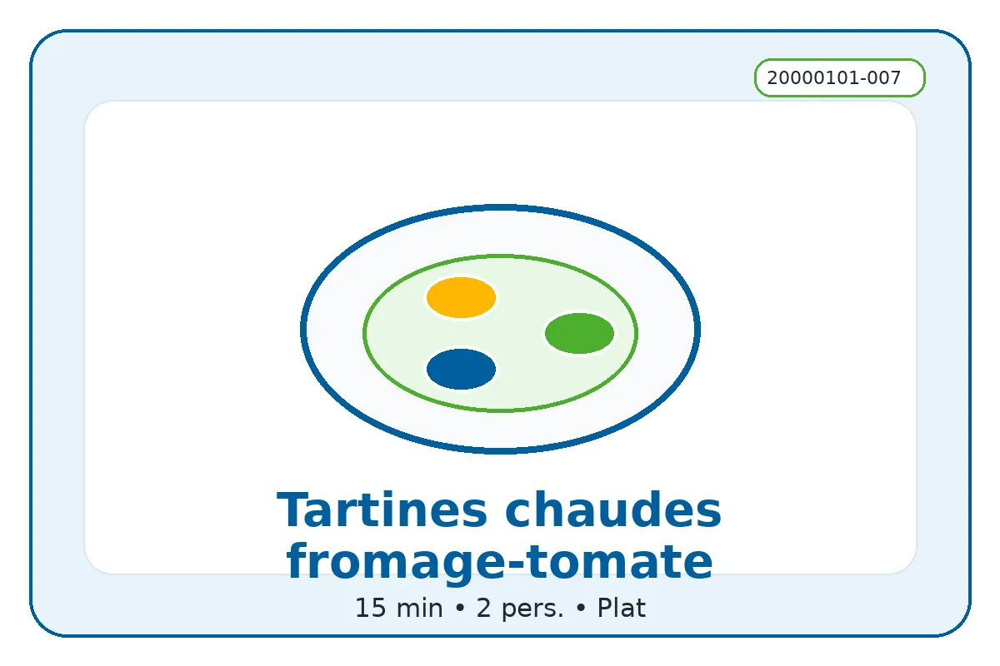

ID recette : 20000101-007
Tartines chaudes fromage-tomate
Des tartines chaudes fromage-tomate, rapides et économiques, parfaites pour utiliser du pain rassis ou des restes de fromage.
Le passage au four rend le pain croustillant et fait fondre le fromage. Les tomates apportent du jus : il faut donc éviter d’en mettre trop ou choisir une base de pain assez épaisse.

🧭 Repères alimentaires
Repères indicatifs à vérifier selon les marques, les remplacements d’ingrédients et les produits réellement utilisés.
🔥 Cuisson indicative
Four : 200 °C pendant 8 à 12 min, jusqu’à ce que le fromage soit fondu et le pain croustillant.
Repère four : 200 °C — 8 à 12 min.
Ces valeurs sont indicatives : ajuster selon le four, l’épaisseur du plat et la coloration souhaitée.
⚖️ Adapter les quantités
Le calcul adapte les quantités proportionnellement. Les valeurs nutritionnelles restent calculées sur les quantités de base.
🧺 Ingrédients avec quantités
Principaux
- 4 tranches — pain
- 120 g — fromage
- 250 g — tomates
Secondaires
- 1 c. à soupe — huile d’olive ou huile neutre
- 1 gousse — ail
- 1 pincée — sel et poivre
Optionnels
- 1 c. à café — herbes
- 80 g — thon ou jambon
- 30 g — olives
👩🍳 Préparation détaillée
- Préchauffer le four à 200 °C. Disposer les tranches de pain sur une plaque.
- Frotter légèrement le pain avec de l’ail si disponible, puis ajouter un filet d’huile ou une fine couche de fromage frais.
- Couper les tomates en tranches ou en petits morceaux. Les déposer sur le pain sans trop charger.
- Ajouter le fromage, les herbes, le sel et le poivre.
- Enfourner 8 à 12 minutes, jusqu’à ce que le fromage soit fondu et les bords du pain croustillants.
💡 Astuce anti-gaspi
Le pain rassis devient très bon une fois grillé. Pour éviter qu’il ramollisse, mettre le fromage sous les tomates ou précuire légèrement les tomates.
🔁 Variantes possibles
Ajouter oignon, jambon, thon, champignons, épinards, légumes grillés, olives, basilic ou piment. Remplacer le fromage râpé par camembert, chèvre, mozzarella ou fromage frais.
🔎 Rechercher cette recette sur Google
🔗 Sources d’inspiration
Liens utilisés pour comparer les techniques, les variantes et les temps de préparation. La fiche reste reformulée et adaptée au projet.
📊 Valeurs nutritionnelles estimées
Estimation indicative. Les valeurs ci-dessous sont calculées à partir d’ingrédients génériques et des quantités de base. Elles ne remplacent pas les étiquettes des produits, ni un avis médical ou diététique. Voir l’explication complète.
Non officiel
| Valeur | Par portion | Pour 100 g |
|---|---|---|
| Énergie | 2391 kJ / 571.5 kcal | 740 kJ / 176.9 kcal |
| Protéines | 34.6 g | 10.7 g |
| Glucides | 42.3 g | 13.1 g |
| dont sucres | 7.3 g | 2.2 g |
| Lipides | 28.7 g | 8.9 g |
| dont acides gras saturés | 13.7 g | 4.2 g |
| Fibres | 4.6 g | 1.4 g |
| Sel | 2.7 g | 0.8 g |
Portion estimée : 323 g. Score simplifié : 3. Indicateur estimé non officiel. Il ne correspond pas à un calcul réglementaire ni à un Nutri-Score officiel.
⚠️ Allergènes et conservation
Allergènes : Gluten, Lait
Conservation : À conserver 24 h au réfrigérateur dans une boîte fermée.
Réchauffage : À réchauffer doucement si nécessaire.
Vérifiez toujours les étiquettes des produits utilisés.
🔎 Filtres associés
Cliquez sur un bouton pour trouver les recettes associées au même champ.
Sous-catégorie : Tartine
Moment du repas : Dejeuner Diner
Équipement : Four
Repères alimentaires : Sans porc Végétarien Contient lait Contient gluten
📱 QR code
QR code vers la fiche en ligne.
https://recettesducoeur.github.io/recettes/20000101-007.html
Sur mobile/tablette, seul le téléchargement PDF est proposé. Sur PC, l’impression conserve les quantités sélectionnées.